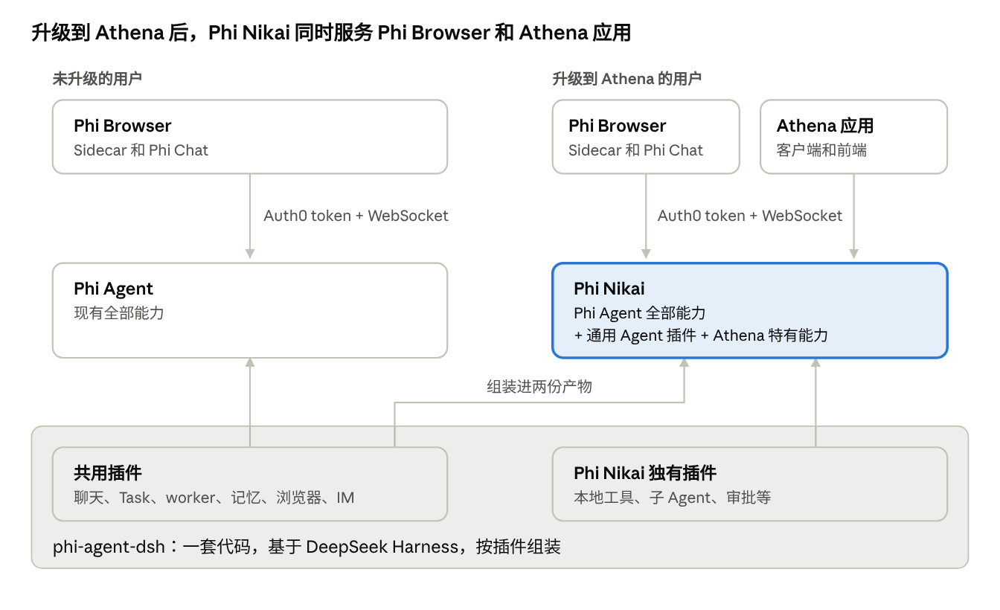
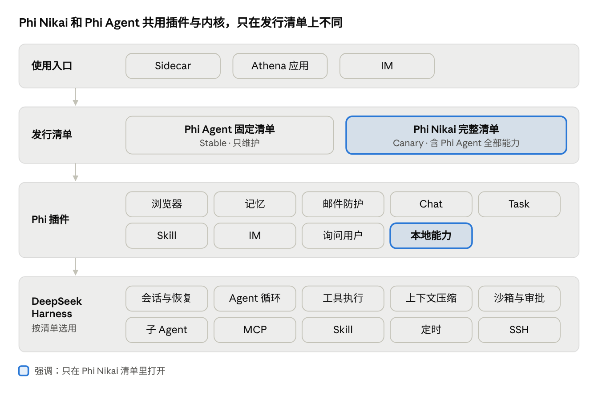
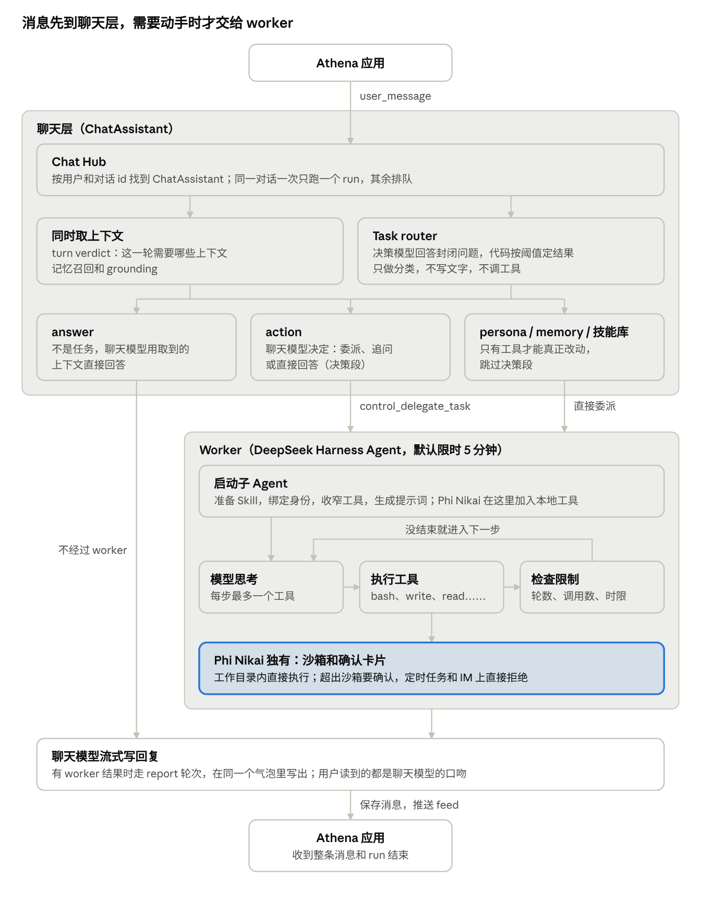
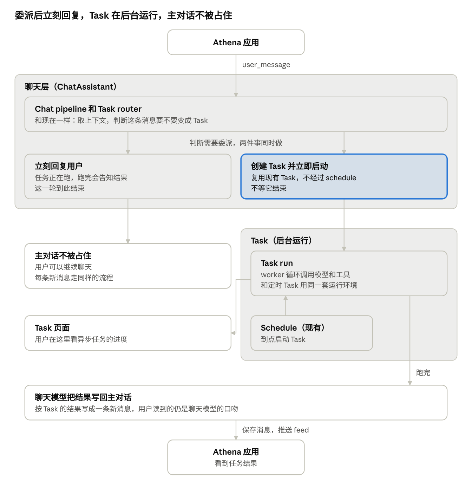

Phi Athena Agent 能力架构概要设计
更新于 2026-11-09
摘要
在设计上 Phi Athena 的 AI 服务 Phi Nikai，并不是一套从零开始的新系统，而是 Phi Agent 的自然延伸：同一个服务、同一套 DeepSeek Harness 内核、同一批插件，只是在发行清单里多打开了一组本地与连接能力。
在 Athena 的 Chat 中，消息仍然走现有的 Chat Pipeline：先取这一轮需要的上下文，召回记忆，再由 Task router 判断是直接回答，还是委派给 worker；最终的回复始终由聊天模型写出。记忆沿用现有的 Memory 架构，Athena 和 Phi Browser 读写的是同一份用户记忆。因此用户升级到 Athena 之后，对话方式、回复口吻，以及 Agent 对用户的了解，都和在 Phi Browser 里保持一致，既不用重新适应，也不用重新积累。
Phi Agent 早已迁移到 DeepSeek Harness，能力完全按插件组装。Phi Nikai 所需要的本地操作、外部连接、子 Agent、定时与审批等能力，上游已经提供了成熟且经过验证的插件。因此，Phi Athena 真正需要投入的工作，集中在产品层——Task、审批、连接、Folio 与主动触发。Agent 运行时本身不需要重新实现。
Phi Agent 和 Phi Nikai 的关系
Phi Nikai 是 Phi Athena 的 AI 服务，也是 Phi Agent 的超集。两者来自同一份代码，鉴权和调用方式相同。
产品规划上，现有的 Phi Browser + Phi Agent 会继续保留。升级到 Athena 之后，Phi Browser 与 Athena 应用都连接到同一个 Phi Nikai。由于 Phi Nikai 完整包含 Phi Agent 的全部能力，两者本质上是一脉相承的演进关系，而非替代关系。
当初把 Phi Agent 迁到 DeepSeek Harness，正是为了让后续能力能以插件方式灵活拼装与升级。Phi Agent 上新增的任何能力，Phi Nikai 都会自动继承。

| Phi Agent | Phi Nikai | |
|---|---|---|
| 谁在用 | 未升级的 Phi Browser | 升级后的 Phi Browser 和 Athena 应用 |
| 能力 | 现有全部能力 | Phi Agent 全部能力、通用 Agent 插件，以后再加 Athena 特有能力 |
| 鉴权和调用 | Auth0 token + WebSocket | 相同 |
| 现状 | 已发布 | 代码在 feature/phi-nikai 分支，还没合入 staging，CI 也还没打包 |
Athena 应用可以先连 Phi Agent 开发。以后换成 Phi Nikai，聊天这部分不用改代码。
DeepSeek Harness 已经提供的能力
Phi Nikai 需要的运行时能力，在上游 DeepSeek Harness 里都有对应的插件。我们只需要在发行清单中打开它们，并在 Phi 的插件层补充少量产品规则即可。
| 能力 | 上游插件 | Phi Nikai |
|---|---|---|
| 本地操作：shell、文件读写与搜索、后台任务 | dsh-tool-bash、dsh-tool-fs、dsh-tool-fs-search、dsh-tool-jobs |
已接入 |
| 沙箱与沙箱策略 | dsh-sandbox-local、dsh-bash-sandbox |
已接入 |
| 工具调用前征得用户同意 | dsh-user-approval |
已接入 |
| 同进程子 Agent | dsh-tool-subagent |
已接入 |
| 第三方 harness 作为子 Agent：Claude Code、Codex、任何 ACP Agent | dsh-subagent-claude-code、dsh-subagent-codex、dsh-subagent-acp |
可直接接入 |
| 连接外部服务（MCP） | dsh-mcp-client、dsh-mcp-manager |
可直接接入 |
| Skill：本地 Skill、Office 文档 | dsh-skill-filesystem、dsh-skill-office |
可直接接入 |
| 定时与提醒 | dsh-schedule |
可直接接入 |
| 声明交付的成果文件 | dsh-tool-present |
可直接接入 |
| 在另一台机器上执行（SSH） | dsh-ssh、dsh-fs-ssh、dsh-sandbox-ssh |
可直接接入 |
分层架构
Phi Nikai 与 Phi Agent 共用同一套插件与内核，差别仅体现在发行清单上。

上层只依赖下层。Phi Agent 与 Phi Nikai 的差异被严格限制在发行清单层面：同一批插件、同一个内核。Phi Nikai 只是额外打开了本地能力，以及 MCP、第三方子 Agent、定时等上游已有插件。
这种设计保证了：任何对内核或通用插件的改进，两边都能同时受益，而无需维护两套并行实现。
一条消息的执行流程
消息先进入聊天层，只有真正需要动手时才委派给 worker，最终由聊天模型写出回复。Phi Nikai 的聊天流程与 Phi Agent 完全一致，唯一差别是 worker 侧多了本地工具。
worker 本身是异步的。聊天这一轮不会等待它结束。前端只需维护一条 WebSocket，即可实时看到状态、进度、确认卡片与最终消息。

| 阶段 | 做什么 | 代码位置 |
|---|---|---|
| Chat pipeline | 找到对话的 ChatAssistant，同时取上下文并跑 task router |
plugins/chat/src/lib/sidecar-chat.ts、chat/src/engine/assistant.ts |
| Task router | 决策模型回答封闭问题，代码按阈值得出结论。失败时不猜结果，由聊天模型自己判断 | chat/src/execution/task-router.ts |
| 到 worker | 聊天模型调用 control_delegate_task 并写出 objective，用户先看到一句占位状态。任务默认限时 5 分钟 |
plugins/chat/src/lib/worker-task-executor.ts、delegated-worker.ts |
| Worker | DeepSeek Harness 的 Agent 循环调用模型和工具，每步最多一个工具。进度按 worker_progress、reasoning_summary_* 推给前端 |
plugins/worker/src/agent-tools.ts、plugins/guard/src |
| 返回用户 | 先推 worker 生成的文件，再由聊天模型根据结果写回复。Hub 保存消息，推送 feed 和 RUN_FINISHED |
chat/src/engine/assistant.ts、prompts/turn-notes.ts |
Phi Nikai 在 Phi Agent 之上新增什么
下表六项里，Folio 是新接入的能力；其余都是把上游插件接入清单，再在 Phi 插件里加产品规则。
| 能力 | 用户看到的 | 落在哪里 |
|---|---|---|
| 后台执行 | Task 在后台跑，关掉窗口、服务重启都不丢 | Phi 的 Task 插件 + DeepSeek Harness 会话恢复 |
| 权限与审批 | 风险操作先问，常用操作可以设为自动 | dsh-user-approval + Phi 的审批记录；重启后的答复只授权一次，按工具名和参数匹配 |
| 外部连接与 Skill | 用户说要装什么，Agent 装好并配置；可用内置 Skill，也可自己写 | MCP 与 Skill 插件；现有的浏览器 Skill 扩展为完整 Skill |
| 成果交付 | 成果集中在 Folio | dsh-tool-present + Folio |
| 主动触发 | 到点或条件满足时 Agent 自己开始 | dsh-schedule + Phi 的触发规则 |
| 远程执行 | Task 在别的机器上继续 | 上游 SSH 系列是现成的一条路，方案待定 |
浏览器能力、记忆、邮件防护、Chat 这些 Phi Agent 已有的插件原样保留，Phi Nikai 直接继承。
异步 worker
委派给 worker 的任务在后台运行，主对话不会被占住。用户可以一边等待任务，一边继续聊天，体验与 Claude Code 的 Task 类似。
异步 Task 没有另起一套机制，而是直接复用现有的 Task 基础设施。定时 Task 配合 schedule 到点执行，异步 Task 则在创建后立即执行。两者共享同一套运行环境、进度查看方式与结果回写路径。

- 判断： 用户的消息经过 chat pipeline 和 task router，判断需要变成 Task 委派给 worker。这一步和现在一样。
- 立即启动： chat pipeline 创建 Task 并立即启动，不等它结束。
- 立刻回复： 同时告诉用户任务正在跑，跑完会告知结果。这一轮到此结束，用户可以继续在主对话里聊天。
- 后台执行： worker 在 Task run 里完成任务。用户想看进度，可以去 Task 页面。
- 告知结果： Task 跑完后，聊天模型把结果写回主对话。
复用现有的 Task
| 定时 Task | 异步 Task | |
|---|---|---|
| 谁创建 | 用户在 Task 页面创建，或 worker 调用 schedule.create |
chat pipeline 委派时创建 |
| 何时执行 | schedule 到点 | 创建后立即执行 |
| 怎么执行 | Task 的 worker 运行环境 | 相同 |
| 怎么看进度 | Task 页面 | 相同 |
| 结果去哪 | 报告写回来源对话 | 相同 |
现有 Task 已经有这些接口：/api/tasks 管理任务和运行记录；报告以 task_report 事件推送，并保存在消息的 metadata.taskReport 里。Phi Chat 里的 Tasks 页面就是基于它们做的。
主对话的权限
- 默认 Auto： 所有用户都用 Auto，界面上没有开关。Auto 审查每个操作，需要时用通俗的话说明这个操作会做什么，再请用户确认。详细规则和网络策略后续再定。
- Bypass： 只能在开发者模式里打开，打开后才会出现 Auto 和 Bypass 的选择。
- 确认卡片： 出现在主对话里，标明来自哪个 Task。只有用户的操作能批准，卡片不设超时，刷新和重启后仍在。重启后的答复只授权一次，按工具名和完全相同的参数匹配。
- 异步 Task： 启动时带上用户的权限选择。
- 定时 Task： 创建时定好权限，并确认已知的额外权限；运行时不再询问。碰到边界时该操作失败，报告里提供「以后都允许」。
发行与项目结构
Phi Agent 和 Phi Nikai 是同一个项目按两份清单构建的两个产物。Phi Nikai 的清单包含 Phi Agent 的全部能力。
- Canary： Phi Agent 直接升级为 Phi Nikai，方便 Athena 开发。
- Stable： 继续发布 Phi Agent，只做维护。它的发布清单固定，需要新插件时手动加进清单。
- Athena 正式版： 开始发布时，再决定两者如何共存和测试。
phi-agent-dsh/
bundle/ Phi Nikai 的完整清单
plugins/ 全部插件，包括本地能力 local/
lib/ 共用库
phi-agent/bundle/ Phi Agent 的固定发布清单
scripts/ env/ 构建、打包与环境配置
phi-agent-dsh 是 Phi Nikai 的主项目，Phi Agent 占一个子目录。两个产物共用同一个 DeepSeek Harness 版本；服务名和通信路径仍叫 phi-agent，客户端不用改。
演进原则
- 能力加在插件层。 新需求先看上游有没有现成插件，有就接入清单；没有再在插件层自己写，不改内核。
- 跟着上游走，不分叉。 不给上游依赖打补丁，上游升级直接吸收。升级到 DeepSeek Harness 0.2 时，前后 A/B 对比没有回归。
- 一个服务，一套内核。 Phi Agent 与 Phi Nikai 只在清单上不同。共用代码不按产物分支；要不同的行为，按使用入口（Athena 还是 Sidecar）或扩展点来分。
- 职责清晰划分。 Agent 循环、会话、工具执行、子 Agent 交给 DeepSeek Harness，Phi 自己写浏览器、记忆、Task、审批规则这些只有 Phi 才有的东西。